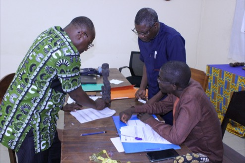
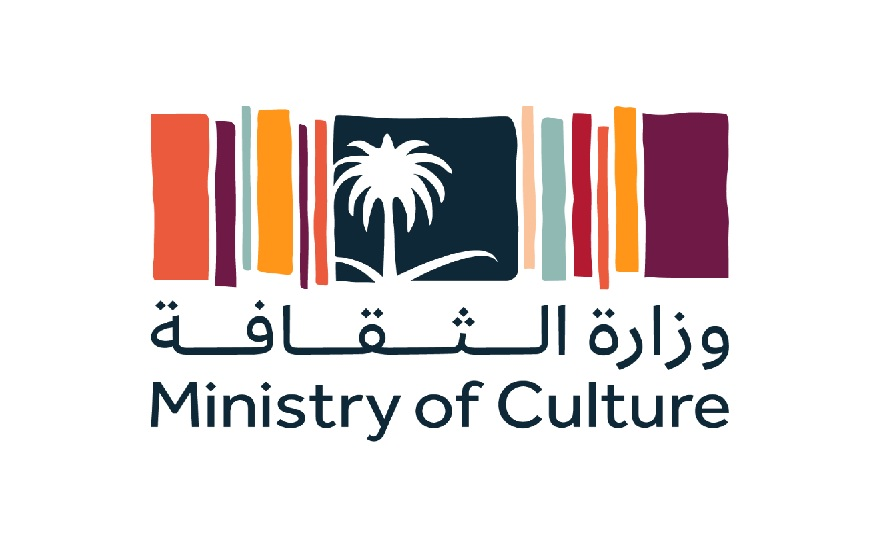
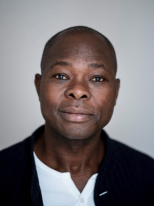
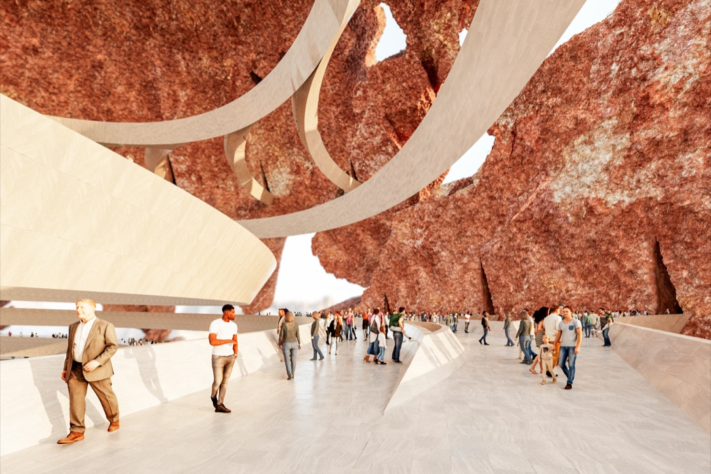

About the UNESCO Virtual Museum of Stolen Cultural Objects
Learn more about this unique and innovative platform.
Read more


News
Learn more about this unique and innovative platform.
Read more

Learn more about the pilot capacity-building workshop in Togo.
Read moreUNESCO is the United Nations agency that promotes cooperation in education, science, culture and communication to foster peace worldwide.
The Organization provides essential assistance to its Member States by establishing global norms and standards, developing tools for international cooperation, generating knowledge for public policy and building worldwide networks of sites.
Its work with 194 Member States includes protecting biodiversity, addressing the challenges of artificial intelligence, ensuring quality education, and safeguarding cultural heritage.
To know more about UNESCO : unesco.org

The 1970 UNESCO Convention on the Means of Prohibiting and Preventing the Illicit Import, Export, and Transfer of Ownership of Cultural Property is a landmark international treaty that has shaped global efforts to safeguard cultural heritage. Adopted on 14 November 1970, it was the first binding legal instrument to recognize the need for coordinated international action to combat cultural property trafficking.
Learn more about the 1970 Convention
Cultural property has sometimes crossed centuries before reaching us. As witnesses to a common history and culture, these objects are part of our shared identity — yet theft, looting, and trafficking deprive communities of memory and cultural rights, fuel organized crime, money laundering and sometimes terrorism financing, affecting origin, transit and destination countries alike. Preserving heritage is a priority for UNESCO, the only United Nations agency specifically mandated for culture.
Read more
The long-standing commitment to return and restitution lies at the heart of UNESCO’s mission. In this debate, the Organisation has been at the forefront of global discussions and advocacy, serving as a multilateral platform for cooperation, dialogue, and support to Member States — an issue that touches identity, spirituality, education, justice and development, particularly through museums.
Read more
The UNESCO Virtual Museum is generously funded by the Kingdom of Saudi Arabia.
Read more
INTERPOL is a partner of the UNESCO Virtual Museum of Stolen Cultural Objects
Learn more
Francis Kéré is the UNESCO Virtual Museum architect
Learn more
Partner with the UNESCO Virtual Museum of stolen cultural objects.
Read more